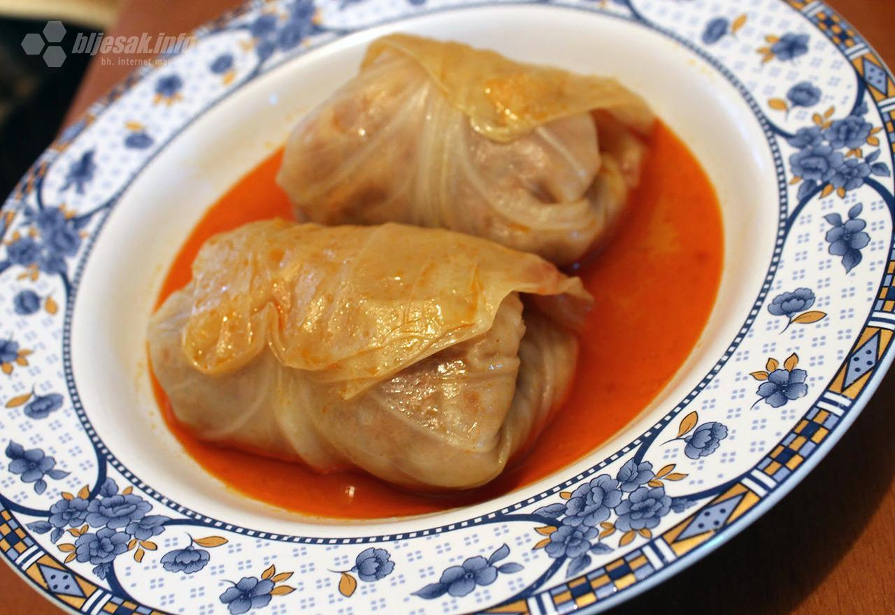

Ovo su neki bakini najbolji recepti:
| Recept 1 | Recept 2 | Recept 3 | Recept 4 |
|---|---|---|---|
|  |
Sastojci: tijesto, meso
Tijesto:
350 gr brašna
1 jaje
3 gr soli
150 ml vode
50
ml ulja
Meso:
500 gr mljevene junetine
100 ml vtuće vode
1 glavica
crvenog luka
1 češanj bijelog luka
10 gr soli
3 gr papra
Priprema:
1. Pomješajte lagano sve ove sastojke i počnite da mijesite tijesto. Dodajte u tijesto samo polovinu ulja a drugu polovinu ostavite za kraj. Mijesite dvije do tri minute. Ovoliko kora moze da vam bude dovoljno za 6 bureka. Kada ste zamijesili tijesto dodajte malo ulja te umjesite tijesto u ulju.
2. Razdvojite tijesto na 6 kuglica ili na 3 zavisno dali želite da razvlačite kora za 2 bureka odjednom ili sve posebno. Stavite loptice tijesta na tanjir te pokrijte sa providnom folijom. Ostavite da odstoji sat vremena na sobnoj temperaturi i sat vremena ili vise u frižideru. Tjesto moze da vam stoji i preko noći u frižideru.
3. Pomješajte lagano sve sastojke za mesnu masu. Bijeli luk mozete da izostavite ako ne volite njegov ukus. Kada ste dobro pomješali ostavite u hladnjaku bar sat vremena.
Ostatak na: ovom linku
Sastojci:
1 glavica kiselog kupusa od oko 1,5 kg
1 kg mljevenog mesa (1/2 kg junetine, 1/2 kg svinjetine)
2-3 glavice luka
3-4 režnja češnjaka
2 žlice svinjske masti
100-200 gr riže
200 g dimljene slanine
1 žlica slatke crvene paprike
1 mala žličica tucane, ljute paprike
2-3 lovorova lista
sol i papar
komadić sušenih rebara
Priprema:
1. Najprije blago ispržite narezani luk i češnjak. Dodate sitno narezanu slaninu i na kraju papriku (slatku i ljutu). Smjesu prebacite u zdjelu u kojoj ćete miješati meso i pričekajte malo da se ohladi. Dodajte rižu, mast, sol i papar. Smjesu dobro zamiješajte i obavezno probajte da ste sigurni da slanoća odgovara.
2. Skidajte listove kupusa i sa prvih listova možete maknuti zadebljanja. Ta zadebljanja ne bacajte već ih izrežite i ubaciti kao rezano zelje. Sarme se motaju počevši od korijena lista prema vrhu i na kraju se krajevi utisnu.
3. Koru slanine (špeka) kojeg ste rezali sačuvajte i stavite na dno lonca. Zatim stavite red rezanog zelja i tek na to stavljate sarmice. Time ste se osigurali i sarme sigurno neće zagorjeti, a sve sastojke ste maksimalno iskoristili. U sredinu stavite komadić rebra ili drugog suhog mesa. Kad napunite red sarmi, sarme pokrijete rezanim zeljem i opet ponovo punite novi red sarmama. Na kraju sve pokrijete ostatkom kiselog zelja koje vam je preostalo. Dodate par lovorovih listića i to je sve.
Ostatak na: ovom linku
Sastojci:
2 čaše brašna
1 čaša jogurta
1/2 čaše ulja
1 prašak za pecivo
1 žlica šećera
prstohvat soli
Priprema:
1. U posudi prvo pomiješaj brašno, prašak za pecivo, šećer i sol, a zatim dodaj jogurt i ulje. Sve sastojke umijesi rukama kako bi dobila glatko tijesto, a po potrebi možeš dodati još brašna. Tijesto razvuci rukama u okruglom plehu koji prethodno trebaš namazati uljem. Potom izbockaj tijesto vilicom i ostavi ga oko 10 minuta da odmori.
2. Za to vrijeme zagrij pećnicu na 220 stupnjeva i na toj temperaturi peci pogaču dok ne porumeni (oko 15 do 20 minuta). Gotovu pogaču umotaj u krpu kako bi omekšala.
Dodatni savjet: Pogaču nemoj rezati nožem, već je izlomi rukama. Može se poslužiti i dok je topla, ali i hladna.
Sastojci:
500 g brašna
1 kesica suhog kvasca
1 kašika šećera
1 jaje
prstohvat soli
ulje za prženje
Priprema:
1. U posudu nasuti brašno, dodati kvasac, šećer i prstohvat soli, te izmiješati. Dodati jedno jaje, pa sipajući mlako mlijeko, zamijesiti fino tijesto.
2. Tijesto pokriti krpom i ostaviti na toplom mjestu otprilike sat vremena.
3. Nakon sat vremena tijesto premijesiti još jednom i razvući ga oklagijom. Neka ne bude ni pretanko, ni predebelo, otprilike debljine prsta.
4. Krugove vaditi pomoću čaše. Pokriti ih krpom i ostaviti 15 minuta da se dižu. Zatim ih okrenuti na drugu stranu i ostaviti još 15 minuta.
Ostatak na: ovom linku